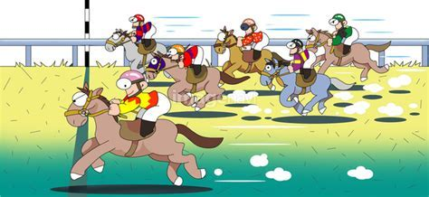

競馬ニュース
ボートニュース
競輪ニュース
レース結果
競馬ニュース
2022/01/27
川崎記念（JpnⅠ）のJRA出走予定馬【川崎競馬場】
2022/01/27
【根岸Ｓ】ヘリオス軽快 ラスト１Ｆ１１秒４で１馬身先着 武豊「乗りやすい」
2022/01/26
【３歳馬格付けチェック】オニャンコポン惜しくもランク外 順位変動なし
2022/01/25
【大井・22桃花賞結果】今野忠成騎手騎乗の6番人気ラインブレイカーが逃げ切って勝利
2022/01/24
【シルクロードS見どころ】重賞3勝の明け4歳メイケイエールが人気の中心
2022/01/23
【ＰＯＧ】カネコメシスター ７馬身差圧勝劇 森裕「いい内容」
ボートニュース
2022/01/31
谷村一哉「ターン回りはしっくり来てない」出足を求め調整／下関ミッド
2022/01/30
板倉敦史が３連単12万円超のジャンボ配当演出「出足と回り足いい」／桐生
2022/01/29
古賀繁輝が好リズムで準優12Ｒへ「前検の体感に戻った」／下関
2022/01/28
施行者ショック…峰竜太と井口佳典の売れ筋２人がそろって負傷帰郷／戸田
競輪ニュース
2022/01/31
高橋築Ｓ級で初の特選シード 意識改革して「先行にこだわらない」／取手
2022/01/30
119期期待の佐藤竜太２周先行押し切る、新車も「乗りやすい」／奈良ミッド
2022/01/29
小川真太郎「責任重大なところを任された」決勝は四国４車先頭で気合／高松
2022/01/28
佐藤博紀４年３カ月ぶりのＶチャンス タイミング逃さず仕掛けて…／立川
2022/01/27
猪子真実が“験のいい”３着発進 今年初の決勝進出を決めるぞ／大垣ミッド
レース結果
レース結果サイト
競馬結果
ボート結果
競輪結果

↑